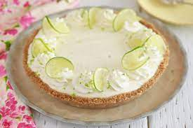

I couldn't in good nature do a project on food without covering (sometimes) my favorite part of the meal. It comes at the end, for me it's always sweet, and it usually involves ice-cream. But to go along with the theme here I will cover one recipe for a dessert and then I will pare the meals I have suggested with thier own desserts.

So the first time I made this I was so surprised at how simple the recipe was and how easy it was to make this incredible pie. So, to the store.
For the pie